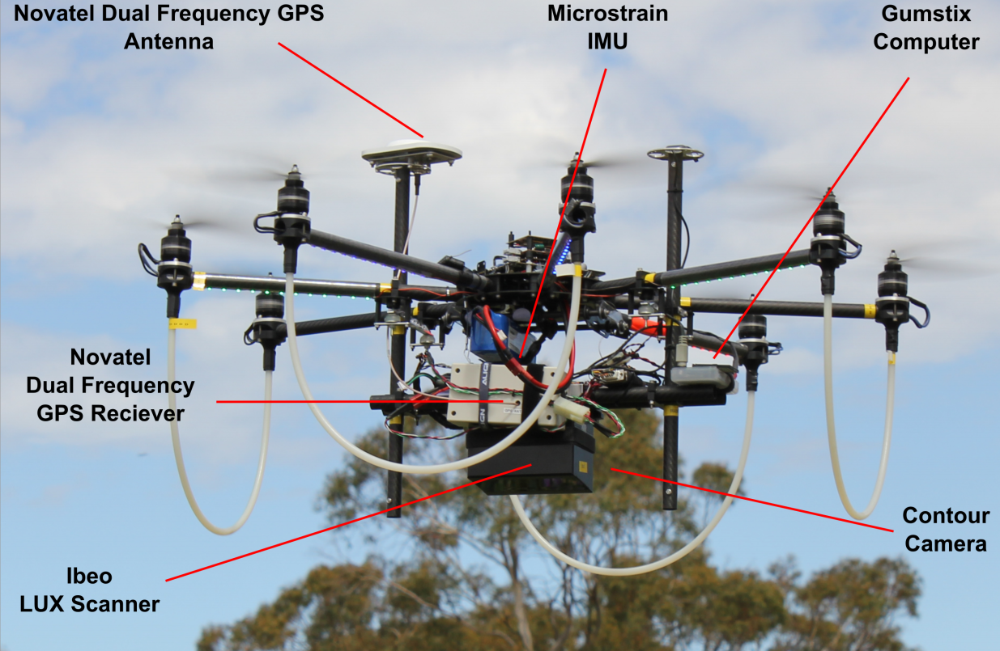

GIS595/MEA792:
UAV/lidar Data Analytics
Syllabus
Schedule
Lectures
Assignments
Projects
TerraLuma UAV-LiDAR system
A UAV for the first-ever autonomous solar-powered crossing of the Atlantic Ocean
Basic
wingspan 5.6 m
mass 7.36 kg (with batteries)
payload 0.8 kg
